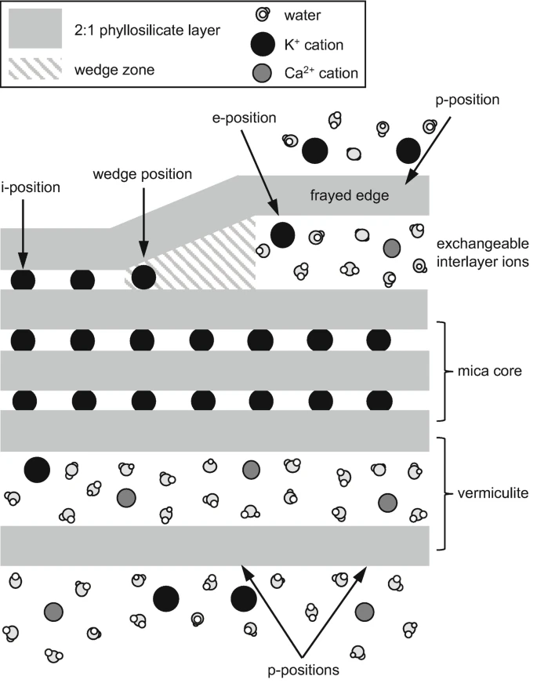
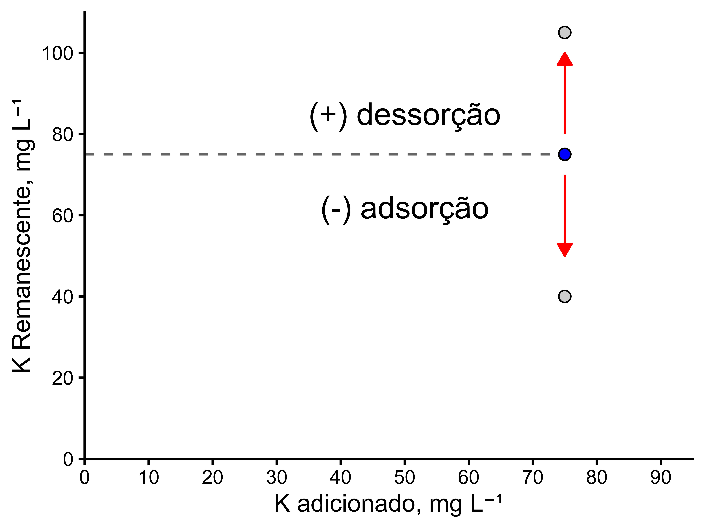
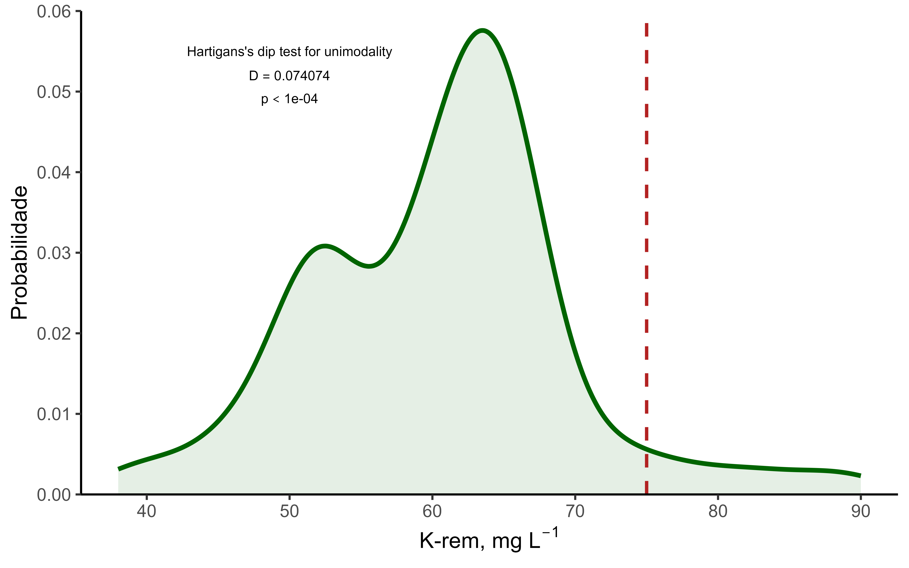
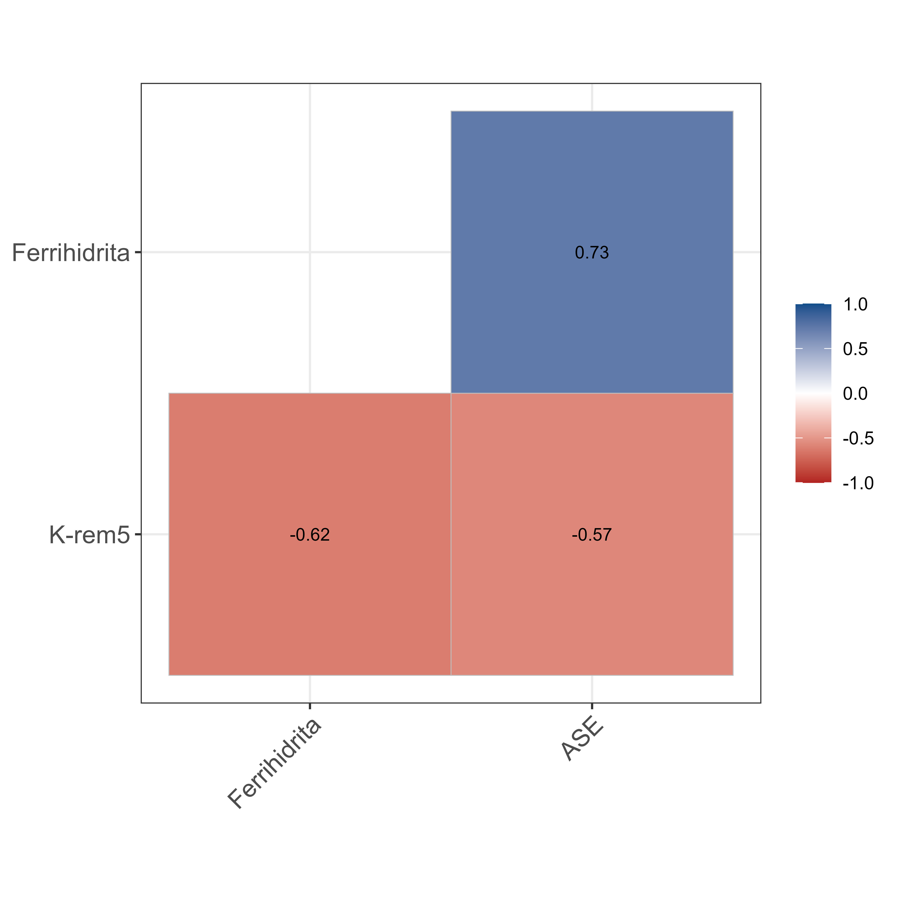

Efeito da mineralogia no teor de potássio remanescente em solos tropicais e subtropicais
Seminário do Programa de Pós-Graduação em Ciência do Solo
2025-11-19
Quem adsorve o K no solo?
A rigor, a adsorção de potássio ocorre em superfícies que apresentam carga elétrica negativa.
Em outras palavras, no solo pode ser matéria orgânica ou minerais.

Fonte: Bell et al., 2020

Fonte: Wang et al., 2016
Como medir a adsorção?
Por meio de isotermas de adsorção, adiciona-se ao solo uma quantidade conhecida do nutriente e quantifica-se o que permanece na solução após o “equilíbrio”


Fósforo remanescente (P-Rem) e Potássio remanescente (K-Rem)

Adiciona-se 60 mg L-1 de P ao solo e quantifica-se a concentração após 5 minutos de agitação (Alvarez et al., 2000).
O reagente utilizado é KH2PO4.
Na solução com 60 mg L-1 de P há 75 mg L-1 de K.
Estudo sobre potássio remanescente

Amostra de solo e textura
Um total de 54 amostras, todas da camada 0 - 20 cm

Mineralogia e identificação e semi-quantificação de minerais
Caulinita: método da área do pico princial

Óxidos de ferro:
\(Fe_{d} = Fe~DCB\)
\(Fe_{Fh} = Fe~oxalato~de~amônio\)
\(Fe_{Mh} = Fe~estimado~por~\chi_{LF}\)
\(Fe_{Hm+Gt} = Fe_{d}- (Fe_{Fh}+Fe_{Mh})\)
\(Fe_{Hm} = \frac{(1.59*Fe_{Hm+Gt})}{(\frac{1.43}{(\frac{Hm}{(Hm+Gt)})})-1.43 + 1.59}\)
\(Fe_{Gt} = Fe_{d}- (Fe_{Hm} +Fe_{Fh}+Fe_{Mh})\)
Mineralogia e identificação e semi-quantificação de minerais
Minerais 2:1:
Agrupamento de solos com base na interpretação do DRX
Presença ou ausência do mineral no DRX de lâminas orientadas.
Principalmente em lâminas com MgCl2

Existe a variável K-Rem?


Relação do K-Rem com Mineralogia do solo
Caulinita


Relação do K-Rem com Mineralogia do solo
Óxidos de ferro

Relação do K-Rem com Mineralogia do solo
É Ferrihidrita ou área superfícial específica?


Relação do K-Rem com Mineralogia do solo
\(Fe_{o}\) aumenta o K trocável, mas ilita o não trocável!


Fonte: Chen et al., 2023
Relação do K-Rem com Mineralogia do solo
Minerais 2:1

Agradecimentos